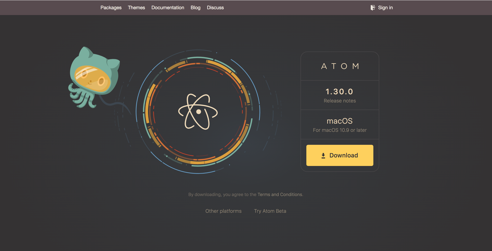

Chapter 3 Atom
3.1 Introducing Atom
Atom is a text editor. A text editor is a little bit like Microsoft Word, but for coding. With a little setup and practice, however, you may find yourself writing your English papers in Atom instead of Word. Atom is faster, simpler, prettier, and does most of what you need in terms of text production. At the very least, it’s much better than Word for taking notes and writing things for the internet.
We’ll eventually use it to code websites, but first we’ll use it for writing blog posts. So let’s install it and customize it for those tasks.
This process might be a little scary, but do the best you can. I’ll include some links to help you if you get stuck.
3.2 Installing Atom
First, let’s install the program and put it where it belongs on your computer.
- If you don’t have Google Chrome on your computer, download it. You don’t technically need Chrome, but it’s what we’ll use to examine code later in the semester.
- Open Chrome and go to atom.io. You should see a screen like the one below.
 - See the Download button? Click it. Your computer should then download a .zip (Mac) or .exe (Win) file. Some computers may automatically open and unpack the .zip file. If yours doesn’t, then open the .zip file yourself. (If you don’t know how to open .zip files on your computer, Google it.) Eventually, you should see the Atom icon.
- If you’re using a Mac, drag that icon to your Applications folder. If you’re using Windows, Atom should automatically add an Atom shortcut to your desktop and your Start menu.
- Click the Atom icon to launch Atom!
For more info/help, visit the Installing Atom section of the Atom documentation. Note that at the top of the page you can choose your operating system (Windows or Mac).
3.3 Setting up Atom and installing packages
Atom’s a little different than Word. Word comes with a whole bunch of features, most of which you’ll never use. Atom comes with a few features but allows you to quickly install many more. You install those features via the package manager. Let’s install most of the packages we’ll need this semester. While we’re at it, we’ll adjust some other settings to make Atom a more comfortable writing environment.
- Once you’ve launched Atom, you should see a screen with a Welcome Guide and other information. At the top of the screen, you should see a menu bar like you do with other applications (File, Edit, View, etc.). Open the Settings view by choosing File => Settings (Win) or Atom => Preferences (Mac). Alternatively, if you want to be a baller, just hit ctrl+comma (Win) or cmd+comma (Mac). You should see a screen like the one below.

- First, click the Editor tab, scroll down to Soft Wrap, and check the corresponding box.
- Next, click the Themes tab. Here you can choose a dark background or a light background. If you prefer a dark background, do nothing. If you prefer a light background, choose One Light. Be sure to change both the UI Theme and the Syntax Theme.
- Finally, click the Install tab. You should see a screen like the one below.

- In the Install Packages search bar, search for atom-beautify. When the package appears, click the Install button and wait for the installation to complete. Congrats–you’ve just installed a package!
- Repeat step 5 for each of the packages below. Once you’ve installed the packages, you can view some of them in the Packages menu (in the same menu bar as File, Edit, View, etc.).
- atom-html-preview – allows you to view changes to your website from within Atom
- emmet – allows you to write your code more quickly
- linter – helps identify potential errors in your code. When you install this one, Atom may ask you to install “dependencies.” Allow each of these
- markdown-writer – allows you to make pretty documents with no fuss (we’ll use this one right away!)
- tool-bar – with the next package, adds a toolbar with buttons for italics, etc.
- tool-bar-markdown-writer – see directly above
- pandoc-convert – converts Markdown files (see below) to Word docs, PDFs, or other formats
3.4 Optional packages
If you wish, you may also download these packages:
- wordcount – adds a word count to the bottom of Atom’s interface
- linter-write-good – tries to identify common writing issues (e.g., passive voice). Can be helpful, but when in doubt use your own judgment.
3.5 Command Palette
You can do pretty much anything in Atom–open files, install packages, convert files from one type to another–via the Command Palette. To open the palette, type cmd+shift+p (Mac) or ctrl+shift+p (Win).
Now type whatever you want to do (e.g., open file, change theme, spell check) and select the option you want. At first you may struggle to figure out the right thing to type, but after some practice, using the Command Palette will be much faster than clicking through the various menus and submenus (though you can always do that, too!).